~8 How to Copy and Paste Keyframes in DaVinci Resolve on Edit Page~
~ Part 1~
7/20/2026
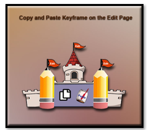
Watch it, if you want to do a copy and paste of key frames and do all the work in the Edit panel, you cannot use Text. Text is one of those things that will force you into the Fusion Panel.
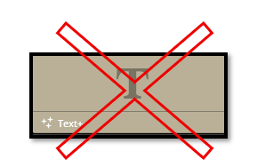
Set up for the Edit Page
Start bringing in your images to the Media Pool, inside of DaVinci. We will use a background image on the bottom track, and then an image of a sugar bowl, on the track over it.
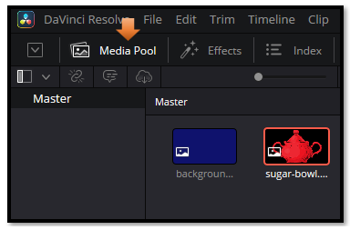
Then drag your two images down on the timeline
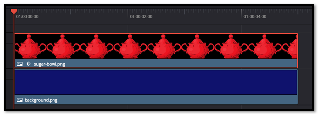
Now select the (in my case) the sugar bowl clip on your timeline. Start on Frame 1 to set your starting position. Always set a starting key frame on frame one, so DaVinci understands where it is starting from. or Davinci will just get confused. DaVinci needs 2 frames to work from in order to create some movement.
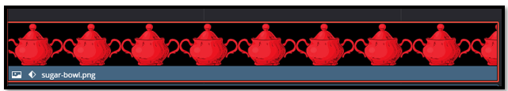
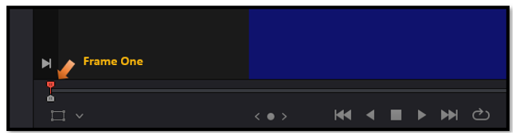
We are starting with the sugar bowl off the left side of the screen and then animate it in. It is going to travel across the screen and leave the screen on the right side. So, for frame 1 move the sugar bowl off to the left of the screen. Use the parameter for X and Y in the inspector to move the sugar bowl.
Hit your diamond next to the parameter for X and Y. To start animating those positions. Notice the diamond is red after hitting it. This means the keyframe has been locked in. With the diamond locked in at frame 1, DaVinci knows we want to animate. Now move the playhead to a new position, and change the X and Y position. You will notice that it will now just automatically start turning the diamond red. Keep moving playhead, and setting a new position, until we finish animating the entire video.
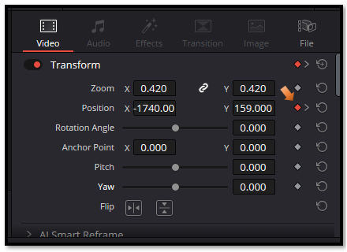
Remember to set your last key frame. And now we can open the Keyframe panel on the Edit page.
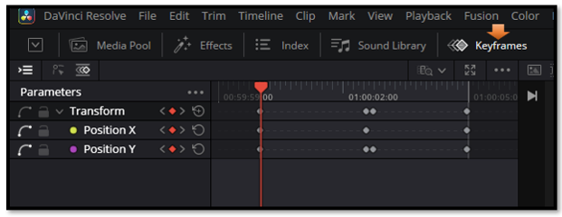
To see the same thing that I have above, turn on these icons. The first shows the Parameter names, and the third icon (which I selected) lets you see the diamonds representing the keyframes.
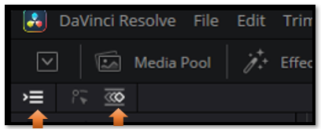
Even though selecting that third icon will allow you to quickly select keyframes. We are going to first add some easing, and to do that it is actually best to select the second icon. You will notice the visual for your keyframes in the panel has changed, and looks more like a graph representation of our key frames.
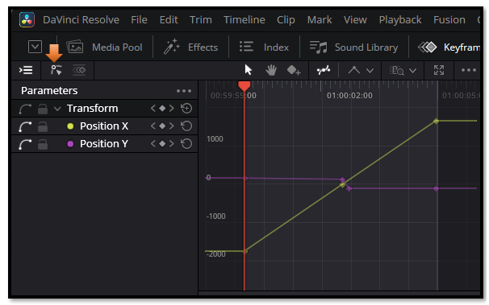
Draw-select a box around your keyframes that you see above.
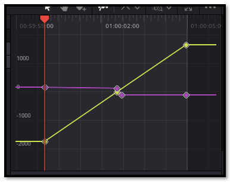
Now right click and then hover over to choose the easing that you want.
Here we choose Ease In and Out
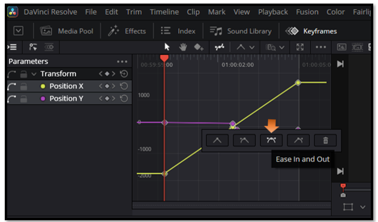
Your keyframes will change.
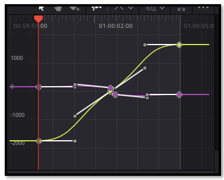
Now to Copy and paste your keyframes
Bring in a new image to use that we can paste the keyframes into. And place the new image on the same track on the timeline, next to the first movie clip with the sugar bowl in it.
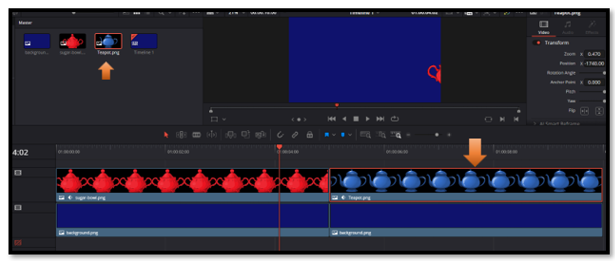
Now click on the red sugar bowl clip on the timeline. Go back to the keyframes panel. Select all the keyframes in the panel
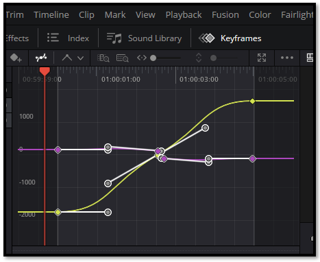
Go to the very top Menu and choose Edit- Copy
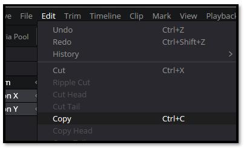
Now click on the blue teapot clip on the timeline and choose Edit- Paste. And Wa-La. Now your teapot is acting in the exact same way as the sugar bowl did.
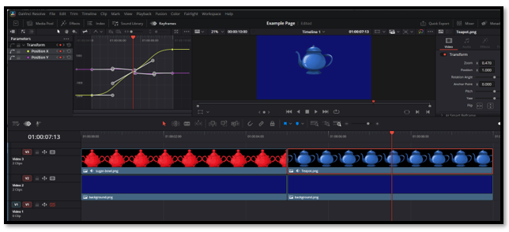
Copying and pasting keyframes on the Edit page may seem simple, but it’s one of those small techniques that unlocks big creative freedom. Once you understand how to duplicate motion or timing between clips, you can build smoother transitions, consistent animations, and a more polished overall look without redoing your work. Think of it as learning to “borrow” your own rhythm — a skill that keeps your edits flowing naturally and saves time for the fun parts of storytelling.